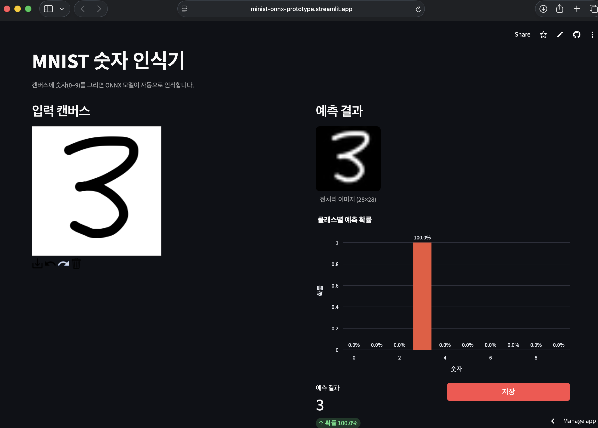
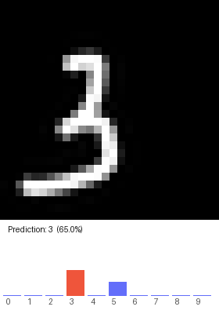

손글씨 숫자 인식 Streamlit 웹 앱 · ONNX Runtime 추론 · Docker 배포
ONNX Model Zoo에서 제공하는 사전 학습된 MNIST 분류 모델(mnist-12.onnx)을 활용해,
사용자가 웹 브라우저에서 직접 숫자를 그리면 실시간으로 0~9를 인식하는 Streamlit 기반 웹 서비스입니다.
모델 추론부터 이미지 전처리, UI 구성, Docker 컨테이너화, Streamlit Community Cloud 배포까지 ML 기반 서비스의 전체 라이프사이클을 구현했습니다.
mnist-12.onnx는 ONNX Model Zoo가 제공하는 LeNet 기반 MNIST 분류 모델입니다.
Apache License 2.0으로 배포되며 수정 없이 원본 그대로 사용했습니다.
| 항목 | 값 |
|---|---|
| 파일명 | mnist-12.onnx |
| 입력 노드 | Input3 |
| 입력 Shape | [1, 1, 28, 28] · float32 |
| 출력 노드 | Plus214_Output_0 |
| 출력 Shape | [1, 10] · logits |
| 파일 크기 | 약 26 KB |
| 라이선스 | Apache License 2.0 (ONNX Model Zoo) |
streamlit-drawable-canvas는 RGBA 배열을 반환합니다.
MNIST 모델이 기대하는 검정 배경 / 흰 선 형식으로 변환하기 위해
아래 5단계 파이프라인을 거칩니다.
⚠ 반전(Step 2)은 필수입니다. 캔버스는 흰 배경에 검정 선으로 그려지지만, MNIST 학습 데이터는 검정 배경에 흰 선 형식이므로 픽셀값을 반전하지 않으면 모델이 올바르게 동작하지 않습니다.
@st.cache_resource 데코레이터로 InferenceSession을 앱 생애주기 동안
단 한 번만 로드합니다. 모델 파일이 없을 경우 urllib로 자동 다운로드하여
Streamlit Community Cloud 환경에서도 별도 설정 없이 동작합니다.
@st.cache_resource def load_session() -> ort.InferenceSession: # 모델 없으면 자동 다운로드 (Cloud 대응) if not MODEL_PATH.exists(): _download_model() return ort.InferenceSession(str(MODEL_PATH)) def predict(session, input_array) -> np.ndarray: logits = session.run([OUTPUT_NAME], {INPUT_NAME: input_array})[0][0] # Numerical stability: subtract max before exp exp = np.exp(logits - logits.max()) return exp / exp.sum() # softmax → 확률 [10]
캔버스 출력(RGBA)을 모델 입력([1,1,28,28] float32)으로 변환합니다. 동시에 UI 시각화를 위한 28×28 미리보기 배열도 반환합니다.
def canvas_to_model_input(image_data: np.ndarray): pil_img = Image.fromarray(image_data.astype(np.uint8), mode="RGBA") gray = pil_img.convert("L") inverted = 255.0 - np.array(gray, dtype=np.float32) # 반전 resized = Image.fromarray(inverted).resize((28, 28), Image.LANCZOS) normalized = np.array(resized, dtype=np.float32) / 255.0 model_input = normalized.reshape(1, 1, 28, 28).astype(np.float32) return model_input, normalized # (모델입력, 미리보기)
캔버스에 획이 그려지는 즉시 추론이 실행됩니다.
canvas_result.json_data["objects"]로 실제 스트로크 유무를 판단해
빈 캔버스에서는 모델을 호출하지 않으며, 확률 차트는 모두 0.0으로 표시됩니다.
# 흰 배경 캔버스는 alpha 합이 항상 >0이므로 json_data.objects로 판단 has_drawing = ( canvas_result.json_data is not None and len(canvas_result.json_data.get("objects", [])) > 0 ) if has_drawing: model_input, preview = canvas_to_model_input(canvas_result.image_data) probs = predict(session, model_input) # [10] softmax 확률 pred_label = int(probs.argmax()) # session_state에 저장 → 차트·메트릭·다운로드 버튼 렌더링
미션 가이드의 기본 스펙을 충족하면서 UX 관점에서 두 가지를 개선했습니다.
json_data.objects를 활용해 실제 스트로크가 존재할 때만 추론하며,
빈 캔버스에서는 모든 클래스 확률이 0.0으로 표시됩니다.


docker run -p 8501:8501 <image>
FROM python:3.11-slim WORKDIR /app COPY pyproject.toml . RUN pip install --no-cache-dir streamlit streamlit-drawable-canvas \ onnxruntime numpy pillow pandas plotly COPY src/ ./src/ COPY data/models/mnist-12.onnx ./data/models/mnist-12.onnx EXPOSE 8501 CMD ["streamlit", "run", "src/app.py", "--server.port=8501", "--server.address=0.0.0.0"]